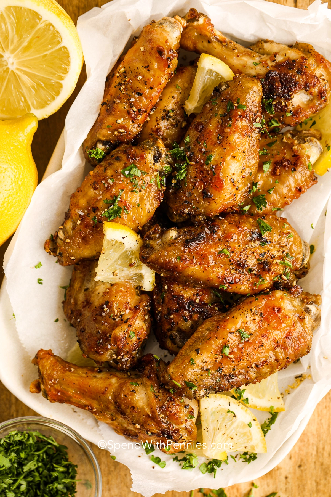

Lemon Pepper Wings

Description
Purchase split wings (little drumsticks and the flat parts) to save time from splitting whole chicken wings yourself. These can be made with fresh or frozen wings. Frozen wings will need more time to cook. These are seasoned with lemon pepper seasoning. If using store-bought, taste it before adding (we prefer homemade lemon pepper seasoning). Some brands can be incredibly salty so you might need to reduce the amount you add to the wings. Once cooked these are tossed with lemon butter and then generously sprinkled with freshly ground black pepper. SO good! If you have a pepper grinder, now is the time to use it!
Ingredients
- 1 ½ pounds chicken wings
- 1 tablespoon olive oil
- 2 teaspoons lemon pepper
- 1 ½ teaspoons lemon zest
- 1 clove garlic minced, or half teaspoon garlic powder
- fresh black pepper and kosher salt
- 3 tablespoons melted butter
- 1 teaspoon fresh lemon juice
Steps
- Pat chicken wings dry with paper towels.
- Preheat oven to 425°F.
- Toss wings with flour and baking powder. Refrigerate at least 15 minutes.
- Toss wings with olive oil, lemon pepper, lemon zest, and garlic.
- Line a pan with foil and top with a baking rack. Spray the rack with cooking spray.
- Bake wings 20 minutes, flip and bake an additional 15 minutes or until crisp. Broil 1 minute each side if desired.
- Combine butter and lemon juice and toss with wings. Generously season with extra pepper, salt to taste, and fresh thyme if desired. Serve immediately.